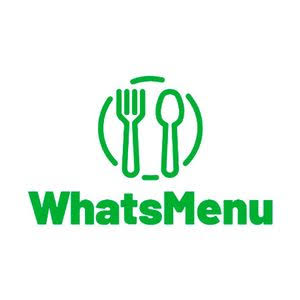

WhatsMenuDesk
O programa de suporte remoto da WhatsMenu. Com ele, nosso atendente te ajuda direto no seu computador.
⬇ Baixar o WhatsMenuDesk
Para Windows 10 e 11 · cerca de 7 MB
Não precisa instalar: é só abrir.
Não precisa instalar: é só abrir.
Você está no celular ou num computador que não é Windows. Abra esta página no computador da loja (Windows) para baixar o programa.
Como usar
- Abra o arquivo baixadoClique em WhatsMenuDesk.exe na barra de downloads do navegador.
- Se o Windows mostrar um aviso azulClique em Mais informações e depois em Executar mesmo assim. É só na primeira vez.
- Passe o ID e a senhaMande para o atendente os números do ID e a senha que aparecem na janela.
- Autorize o acessoQuando aparecer a pergunta, clique em Sim. Depois escolha Tela inteira e clique em Compartilhar.
Você está no controle
Ninguém acessa o seu computador sem você clicar em Sim. Durante o atendimento, a janela do WhatsMenuDesk mostra quem está acessando e tem o botão Encerrar acesso para parar quando quiser. A senha muda a cada atendimento.
Você também pode desligar o uso do mouse e do teclado e deixar o atendente só olhar a tela.